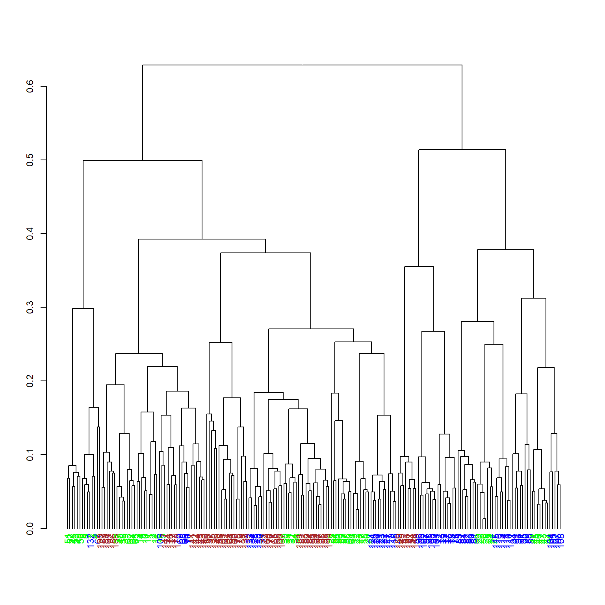

set.seed(1)
library(data.table)
library(compositions)
library(zCompositions)
library(ALDEx2)
library(kableExtra)
library(ggplot2)
library(easyCODA)
library(RColorBrewer)
library(robCompositions)
library(dendextend)
library(coda4microbiome)
library(propr)
library(ppclust)
library(factoextra)
library(cluster)
library(fclust)
library(nnet)
library(corrplot)
source("funcionsCODACesc.R")4 CODA en acci√≥n üòé:
Se obtuvieron muestras fecales, en diferentes momentos, de individuos sanos distribuidos en tres grupos de edad: infantes (I), adultos (A) y ancianos (E). La metagenómica se llevó para 218 muestras que superaron los controles de calidad.
Queremos responder las siguientes preguntas:
¿Las abundancias de qué bichos marcan la diferencia entre dos o más tipos de muestra?
¿En qué pares de bichos cambia significativamente la diferencia entre sus proporciones entres dos tipos de muestras?
4.1 Carga de librerías de R que utilizaremos
4.2 Carga y limpieza de los datos
DF.0=read.table("count_table_otus.tsv",header=TRUE,sep="\t")
rownames(DF.0)=DF.0[,1]
DF.0=DF.0[,-1]
# Eliminando los _
rownames(DF.0)=gsub("_",".", rownames(DF.0))
colnames(DF.0)=gsub("_",".", colnames(DF.0))
# Las filas deben ser muestras y las columnas taxa
DF.0=t(DF.0)
dim(DF.0)[1] 218 280# [1] 218 280
# Eliminamos las filas y columnas con 0
DF.0=DF.0[apply(DF.0, 1, sum)>0,apply(DF.0, 2, sum)>0]
mostres=rownames(DF.0)
bitxos=colnames(DF.0)
colnames(DF.0)=1:dim(DF.0)[2]
Grups=as.factor(substr(mostres,1,1))
colors=c("green","blue","brown")[Grups] 4.3 Tratamiento de los ceros
#Proporciones de ceros por muestras
Zeros.row=apply(DF.0,MARGIN=1,FUN=function(x){length(x[x==0])/length(x)})
#Proporciones de ceros por taxa
Zeros.col=apply(DF.0,MARGIN=2,FUN=function(x){length(x[x==0])/length(x)})
hist(Zeros.row,breaks=20,freq=FALSE,xlim=c(0.5,0.9),xlab="No. of 0's", main="Proportions of 0's in samples")hist(Zeros.col,breaks=20,freq=FALSE,xlab="No. of 0's", main="Proportions of 0 at taxa")# zPatterns de la librería zCompositions
zPatterns(DF.0,label=0,suppress.print=TRUE,main="Global")zPatterns(DF.0[Grups=="A",],label=0,suppress.print=TRUE,main="Global")zPatterns(DF.0[Grups=="E",],label=0,suppress.print=TRUE,main="Global")zPatterns(DF.0[Grups=="I",],label=0,suppress.print=TRUE,main="Global")4.4 Géneros que aparecen únicamente en un tipo de muestra
- Solo en Adultos
bitxos.nomesA=bitxos[which(apply(DF.0[Grups!="A",], 2, sum)==0)]
length(bitxos.nomesA)[1] 4bitxos.nomesA%>%
kbl() %>%
kable_styling()| x |
|---|
| OTU.196 |
| OTU.254 |
| OTU.260 |
| OTU.270 |
- Solo en los Ancianos (Elderly)
bitxos.nomesE=bitxos[which(apply(DF.0[Grups!="E",], 2, sum)==0)]
length(bitxos.nomesE)[1] 16bitxos.nomesE%>%
kbl() %>%
kable_styling()| x |
|---|
| OTU.147 |
| OTU.153 |
| OTU.165 |
| OTU.214 |
| OTU.216 |
| OTU.217 |
| OTU.234 |
| OTU.239 |
| OTU.246 |
| OTU.251 |
| OTU.253 |
| OTU.257 |
| OTU.261 |
| OTU.271 |
| OTU.273 |
| OTU.278 |
- Solo en los Infantes
bitxos.nomésI=bitxos[which(apply(DF.0[Grups!="I",], 2, sum)==0)]
length(bitxos.nomésI)[1] 6bitxos.nomésI%>%
kbl() %>%
kable_styling()| x |
|---|
| OTU.119 |
| OTU.138 |
| OTU.220 |
| OTU.225 |
| OTU.277 |
| OTU.279 |
- Solo en uno
Nomes.a.un=which(apply(DF.0[Grups!="A",], 2, sum)==0 | apply(DF.0[Grups!="E",], 2, sum)==0 | apply(DF.0[Grups!="I",], 2, sum)==0)4.5 Imputación de ceros con la previa de Jeffreys
Se asume que los valores no cero siguen una distribución log-normal pero están truncados en cero. Los ceros están presentes debido a un valor subyacente que se encuentra por debajo del umbral de detección. En este caso se ha puesto una previa no informativa. Los parámetros de estiman via MCMC.
Los ceros se reemplazan con los valores de la distribución predictiva posterior.
#cmultRepl de la librería zCompositions Bayesian-Multiplicative replacement of count zeros
# previa de Jeffreys 1/2, todos los valores tienen la misma probabilidad de ocurrir.
DF.J=cmultRepl(DF.0, method="user", t=matrix(1/dim(DF.0)[2],nrow=dim(DF.0)[1],ncol=dim(DF.0)[2]),s=rep(dim(DF.0)[2]/2,dim(DF.0)[1]),
output="p-counts",suppress.print=TRUE)4.6 Imputación de ceros con Geometric Bayesian multiplicative
Se asume que los valores observados no cero siguen una distribución geométrica (modeliza la probabilidad de que ocurra el primer éxito en una serie de ensayos independientes de Bernoulli, donde un éxito es la observación de un valor no cero). Por lo tanto, los ceros se consideran “fracasos” en esta distribución.
Se estima el parámetro de la distribución geométrica a partir de los valores observados no cero en el conjunto de datos. Se utiliza una distribución previa para el parámetro de la distribución geométrica. Se obtiene la distribución posterior del parámetro con la que se generan valores imputados para los ceros.
# Este es el método por defecto de cmultRepl
# Hay que quitar columnas con solo una entrada diferente a 0
Unics=which(apply(DF.0, 2, function(x){length(which(x>0))})==1)
bitxos.unics=bitxos[Unics]
length(bitxos.unics)[1] 3bitxos.unics%>%
kbl(col.names =NULL) %>%
kable_styling()| OTU.138 |
| OTU.220 |
| OTU.251 |
Damos un vistazo a lo que nos perderemos si las quitamos: Sus frecuencias relativas dentro de sus muestras únicas
Què.ens.perdem=rep(0,length(Unics))
for (i in 1:length(Unics)){
y=attr(Unics,"names")[i]
x=which(DF.0[,y]>0)
Què.ens.perdem[i]=DF.0[x,y]/sum(DF.0[x,])
}
round(Què.ens.perdem,6)[1] 0.024063 0.001049 0.000288La matriz con los ceros imputados …
DF.0U=DF.0[,-Unics]
DF.GBM=cmultRepl(DF.0U,method="GBM",output="p-counts",suppress.print=TRUE)
bitxos.nounics=bitxos[-Unics]4.7 Imputación de ceros con un método Iterativo
El método EM se basa en la idea de maximizar una función de verosimilitud incompleta, donde se asume que los datos faltantes son valores no observados o “datos ocultos”.
# impRZilr de la librería robCompositions
#
# Tarda mucho ...
# DF.0n=as.data.frame(DF.0)
# DF.0n=as.data.frame(apply(DF.0n,MARGIN=2,as.numeric))
# DF.It=impRZilr(DF.0n, eps=0.05, method = "pls", dl=rep(1, dim(DF.0)[2]),maxit = 10,verbose = FALSE)
# saveRDS(DF.It, file="DFItnou.RData")DF.It=readRDS("DFItnou.RData")$x4.8 ¿Qué método para imputar los ceros es mejor?
(Lubbe-Filznoser-Templ Chemolab 2021)
Comparando matrices de correlaciones de Kynclova-Hron-Filzmoser: un valor pequeño indica que el método es mejor.
La función corCoDa del paquete robCompositions que las calcula no aguanta matrices grandes (al menos en el portátil), por lo tanto lo hacemos por muestreo.
# Sustitución de los ceros por algo muy pequeño
# multRepl de la librería zCompositions
DF.0.alt=multRepl(DF.0,dl=rep(1, ncol(DF.0)),frac=10^(-12),label=0)
DF.0.alt.U=DF.0.alt[,-Unics]# X Y con las mismas dimensiones
# m < 30 o da NaN
f=function(X,Y,m){
x=sample(dim(X)[2],m)
(1/m)^2*sum((corCoDa(X[,x])-corCoDa(Y[,x]))^2)
}
mean(replicate(200,f(DF.0.alt,DF.J,25)))
mean(replicate(200,f(DF.0.alt.U,DF.GBM,25)))
mean(replicate(200,f(DF.0.alt,DF.It,25)))
# [1] 0.01688433 0.01664001
# [1] 0.009403911 0.009399878
# [1] 0.06253841 0.057204214.9 Comparando matrices de distancias de Aitchison: valor pequeño indica mejor.
(1/dim(DF.0)[1])^2*sum((aDist(DF.0.alt)-aDist(DF.J))^2)[1] 20279.85(1/dim(DF.0U)[1])^2*sum((aDist(DF.0.alt.U)-aDist(DF.GBM))^2)[1] 19972.44(1/dim(DF.0)[1])^2*sum((aDist(DF.0.alt)-aDist(DF.It))^2)[1] 11971.71Imputa0=c("J","GBM","It")
Imputa0="GBM"
if (Imputa0=="J"){
DF=DF.J
}
if (Imputa0=="GBM"){
DF.0=DF.0U
DF=DF.GBM
bitxos=bitxos.nounics
}
if (Imputa0=="It"){
DF=DF.It
}4.10 Si se quieren filtrar las muestras outliers
Quitamos muestras que contribuyen a tener mucha varianza
Utilizó codaSeq.outlier de funcionsCODACesc.R adaptada de EasyCODA, que le da error
La función codaSeq.outlier ayuda a identificar observaciones que se desvían significativamente de la estructura típica de las composiciones.
El algoritmo de detección de outliers implementado en codaSeq.outlier se basa en la suposición de que los datos de composición siguen una distribución log-ratio multivariada.
DF.CLR=acomp(DF)
CSOut=codaSeq.outlier(DF.CLR, plot.me=TRUE)outliers=CSOut$bad
bones=CSOut$goodLas muestras outliers son
mostres[outliers] [1] "A04T4" "A05T1" "A07T2" "A08T4" "A08T6" "E01T1" "E01T2" "E06T4" "E09T2"
[10] "E10T3" "I01T2" "I01T4" "I02T7" "I05T2" "I07T4" "I07T6" "I07T7" "I09T2"
[19] "I10T6"Si quitamos estas muestras, tenemos que volver a controlar que no nos quede ninguna columna de 0s
DF.0B=DF.0[bones,]
conserv=which(apply(DF.0B, 2, sum)>0)
DF.0B=DF.0B[ ,conserv]# si se emplea DF.It, igual conviene re-calcularlo porque depende de las muestras
# Hay que quitar bichos que hayan quedado a 0 en todo
conserv=which(apply(DF.0B, 2, sum)>0)
DF.0B=DF.0B[ ,conserv]
DF.0Bn=as.data.frame(DF.0B)
DF.0Bn=as.data.frame(apply(DF.0Bn,MARGIN=2,as.numeric))
DFB.It=impRZilr(DF.0Bn, eps=0.05, method = "pls", dl=rep(1, dim(DF.0B)[2]),maxit = 10,verbose = FALSE)
saveRDS(DFB.It, file="DFItBnou.RData")Con la función QuinesMostres indicamos si cogemos solo las muestras buenas o todas
#QuinesMostres=c("totes","bones")
QuinesMostres="bones"
if (QuinesMostres=="bones"){
DF.0=DF.0B
DF=DF[bones,conserv]
Grups=Grups[bones]
colors=colors[bones]
mostres=mostres[bones]
bitxos=bitxos[conserv]
}
DF.CLR=acomp(DF)
DF.prop=t(apply(DF, 1, function(x){x/sum(x)}))4.11 Sin filtrar variables
No hacemos biplot porque con tanta variable no se ve nada
4.11.1 Clustering jerárquico
A diferencia del algoritmo de Ward estándar (agrupa observaciones similares en función de una medida de distancia entre ellas), donde todas las observaciones tienen el mismo peso, el enfoque ponderado permite considerar la importancia relativa de cada observación en el proceso de agrupamiento.
# Clustering jerárquico con distancias euclidianas con pesos
# Función WARD de EasyCODA, necesita que la matriz de clr's se calcule con la misma librería
DF.CLR.W=CLR(DF)
hc=WARD(DF.CLR.W,weight=TRUE)
dend=as.dendrogram(hc)
labels_colors(dend)=colors[hc$order]
par(cex=0.75)
plot(dend, main = "")
par(cex=1)
# No dibujamos barplot de composiciones porque el gráfico no es informativoMatriz para entender los resultados:
clust1=data.frame(Orig=Grups[hc$order],
clust=cutree(dend, k = 3)[order.dendrogram(dend)])
table(clust1)%>%
kbl() %>%
kable_styling()| 1 | 2 | 3 | |
|---|---|---|---|
| A | 51 | 14 | 0 |
| E | 25 | 28 | 16 |
| I | 57 | 0 | 8 |
4.12 ALDEx
Permite identificar características (como especies microbianas o genes) que muestran diferencias significativas entre grupos de muestras (A, E, I) utilizando un enfoque basado en la inferencia bayesiana. Las muestras se extraen de la distribución Dirichlet (la beta en el caso multivariado).
DF0.Aldex=rbind(DF.0[Grups=="A",],DF.0[Grups=="E",], DF.0[Grups=="I",])
DF0.t=data.frame(t(DF0.Aldex))
conds=c(rep("A", dim(DF.0[Grups=="A",])[1]),rep("E", dim(DF.0[Grups=="E",])[1]), rep("I", dim(DF.0[Grups=="I",])[1]))
#'
x.clr.kw=aldex.clr(DF0.t[,1:5], conds=conds[1:5], mc.samples=10, verbose=FALSE)
mc.instances <- numMCInstances(x.clr.kw)
mc.all <- getMonteCarloInstances(x.clr.kw)DF0.Aldex=rbind(DF.0[Grups=="A",],DF.0[Grups=="E",], DF.0[Grups=="I",])
DF0.t=data.frame(t(DF0.Aldex))
conds=c(rep("A", dim(DF.0[Grups=="A",])[1]),rep("E", dim(DF.0[Grups=="E",])[1]), rep("I", dim(DF.0[Grups=="I",])[1]))
#
x.clr.kw=aldex.clr(DF0.t, conds=conds, mc.samples=1000, verbose=FALSE)
x.kw=aldex.kw(x.clr.kw, verbose=FALSE)
# valores esperados del test Kruskal-Wallis y un glm sobre los datos
mm=model.matrix(~conds,data.frame(conds))
x.clr.glm=aldex.clr(DF0.t, conds=mm, mc.samples=1000, verbose=FALSE)
x.glm=aldex.glm(x.clr.glm, mm)
#
x.tot=cbind(bitxos,x.kw,x.glm)
saveRDS(x.tot, file="xtotTotal.RData")x.tot=readRDS("xtotTotal.RData")
x.tot$bitxos=paste0("OTU.",c(paste("00",1:9),paste("0",10:99),100:276))x.tot=readRDS("xtotTotal.RData")head(x.tot)%>%
kbl() %>%
kable_styling()| bitxos | kw.ep | kw.eBH | glm.ep | glm.eBH | Intercept::Est | Intercept::SE | Intercept::t.val | Intercept::pval | condsE:Est | condsE:SE | condsE:t.val | condsE:pval | condsI:Est | condsI:SE | condsI:t.val | condsI:pval | Intercept::pval.holm | condsE:pval.holm | condsI:pval.holm |
|---|---|---|---|---|---|---|---|---|---|---|---|---|---|---|---|---|---|---|---|
| OTU.00 1 | 0.0801547 | 0.1570136 | 0.0303225 | 0.0797589 | 11.554637 | 0.1854587 | 62.30798 | 0 | 0.3413483 | 0.2584491 | 1.3206900 | 0.1903230 | 0.6980545 | 0.2622782 | 2.6615681 | 0.0087659 | 0 | 1.0000000 | 0.9977548 |
| OTU.00 2 | 0.0206440 | 0.0579031 | 0.8077564 | 0.8585892 | 10.371632 | 0.3250578 | 31.95125 | 0 | -0.2775871 | 0.4529898 | -0.6145031 | 0.5414810 | -0.1943723 | 0.4597011 | -0.4203944 | 0.6775020 | 0 | 1.0000000 | 1.0000000 |
| OTU.00 3 | 0.0000000 | 0.0000001 | 0.0000000 | 0.0000001 | 11.002260 | 0.2578001 | 42.77776 | 0 | -1.3076398 | 0.3592617 | -3.6427641 | 0.0003698 | 1.0649519 | 0.3645844 | 2.9277117 | 0.0042881 | 0 | 0.0972514 | 0.8239804 |
| OTU.00 4 | 0.0005343 | 0.0031584 | 0.0136801 | 0.0424850 | 8.736565 | 0.5371141 | 16.30443 | 0 | -2.1272875 | 0.7485045 | -2.8451954 | 0.0060917 | -0.4423784 | 0.7595941 | -0.5828832 | 0.5672890 | 0 | 0.8664487 | 1.0000000 |
| OTU.00 5 | 0.0017423 | 0.0078298 | 0.0006925 | 0.0041580 | 12.369761 | 0.1919890 | 64.43325 | 0 | -0.8996720 | 0.2675496 | -3.3628596 | 0.0009802 | -0.0119042 | 0.2715135 | -0.0438439 | 0.9315986 | 0 | 0.2511886 | 1.0000000 |
| OTU.00 6 | 0.0008415 | 0.0044561 | 0.0350900 | 0.0835593 | 9.693963 | 0.2458796 | 39.53140 | 0 | 0.0115472 | 0.3426497 | 0.0338475 | 0.9425424 | 0.8127551 | 0.3477263 | 2.3506040 | 0.0246736 | 0 | 1.0000000 | 1.0000000 |
Aquí podemos basarnos en:
kw.eBH: ajuste de p-valores utilizando el método de Benjamini-Hochberg (BH) después de realizar un análisis de varianza de Kruskal-Wallis (KW).glm.eBH: ajuste de p-valores utilizando el método de Benjamini-Hochberg (BH) después de ajustar un modelo lineal generalizado (GLM)model.condsE: se refiere al modelo de regresión ajustado utilizando las variables de composición como predictores y la condición “condsE” como la variable de respuesta.
signif.p1=which(x.tot$kw.eBH < 0.01)
signif.g1=which(x.tot$glm.eBH < 0.01)
signif.p1=intersect(signif.p1,signif.g1)
length(signif.p1)[1] 40x.tot.sign=x.tot[signif.p1,c(3,5,19,20)]
names(x.tot.sign)=c("p-val KW corregit", "p-val glm corregit", "p-val E vs A corregit", "p-val I vs A corregit")
rownames(x.tot.sign)=bitxos[signif.p1]
x.tot.sign%>%
kbl() %>%
kable_styling()| p-val KW corregit | p-val glm corregit | p-val E vs A corregit | p-val I vs A corregit | |
|---|---|---|---|---|
| OTU.003 | 0.0000001 | 0.0000001 | 0.0972514 | 0.8239804 |
| OTU.005 | 0.0078298 | 0.0041580 | 0.2511886 | 1.0000000 |
| OTU.008 | 0.0000070 | 0.0000016 | 1.0000000 | 0.0000085 |
| OTU.011 | 0.0010125 | 0.0059162 | 1.0000000 | 0.0787355 |
| OTU.013 | 0.0000433 | 0.0000009 | 0.2828991 | 0.5834326 |
| OTU.016 | 0.0038849 | 0.0006962 | 0.0327502 | 1.0000000 |
| OTU.020 | 0.0097656 | 0.0033890 | 1.0000000 | 0.0918489 |
| OTU.022 | 0.0000326 | 0.0000097 | 1.0000000 | 0.0358061 |
| OTU.025 | 0.0002163 | 0.0001919 | 1.0000000 | 0.0091624 |
| OTU.030 | 0.0000002 | 0.0000000 | 0.0002360 | 0.0000002 |
| OTU.034 | 0.0000000 | 0.0000000 | 1.0000000 | 0.0000011 |
| OTU.038 | 0.0001000 | 0.0006898 | 1.0000000 | 0.0438187 |
| OTU.044 | 0.0000015 | 0.0000002 | 1.0000000 | 0.0000073 |
| OTU.046 | 0.0011419 | 0.0006191 | 0.5639068 | 0.0063995 |
| OTU.047 | 0.0001250 | 0.0001823 | 0.2585800 | 0.9991464 |
| OTU.049 | 0.0053303 | 0.0072328 | 0.1026868 | 0.9789205 |
| OTU.050 | 0.0000264 | 0.0002277 | 0.3148470 | 1.0000000 |
| OTU.052 | 0.0001237 | 0.0075423 | 0.9952454 | 1.0000000 |
| OTU.054 | 0.0013229 | 0.0097693 | 1.0000000 | 0.7449599 |
| OTU.057 | 0.0000489 | 0.0000655 | 1.0000000 | 0.1825672 |
| OTU.059 | 0.0000000 | 0.0000000 | 1.0000000 | 0.0000004 |
| OTU.060 | 0.0002872 | 0.0042465 | 0.6414395 | 1.0000000 |
| OTU.063 | 0.0004161 | 0.0014406 | 0.4197127 | 1.0000000 |
| OTU.064 | 0.0000174 | 0.0001876 | 1.0000000 | 0.0845730 |
| OTU.066 | 0.0000025 | 0.0000036 | 0.0061348 | 0.0000254 |
| OTU.067 | 0.0003092 | 0.0026454 | 0.7734519 | 0.0414771 |
| OTU.075 | 0.0091920 | 0.0052941 | 0.1359825 | 1.0000000 |
| OTU.077 | 0.0000837 | 0.0003245 | 0.9095772 | 0.9990152 |
| OTU.078 | 0.0001277 | 0.0005558 | 0.7500225 | 1.0000000 |
| OTU.086 | 0.0005582 | 0.0022955 | 0.1265078 | 1.0000000 |
| OTU.088 | 0.0000000 | 0.0000000 | 1.0000000 | 0.0000000 |
| OTU.091 | 0.0000012 | 0.0000026 | 0.6333928 | 0.4631056 |
| OTU.096 | 0.0007613 | 0.0024963 | 0.7773785 | 0.9987909 |
| OTU.100 | 0.0087198 | 0.0049639 | 0.4523354 | 1.0000000 |
| OTU.101 | 0.0000000 | 0.0000000 | 1.0000000 | 0.0000138 |
| OTU.102 | 0.0000000 | 0.0000053 | 0.9922000 | 0.0525332 |
| OTU.111 | 0.0004223 | 0.0016563 | 0.3737696 | 0.0432119 |
| OTU.113 | 0.0021340 | 0.0040426 | 0.1122496 | 1.0000000 |
| OTU.118 | 0.0000004 | 0.0000050 | 0.8946424 | 0.0804560 |
| OTU.154 | 0.0010999 | 0.0060971 | 0.1554282 | 0.9981464 |
prova=unlist(sapply(rownames(x.tot.sign),FUN=function(x) which(x==x.tot$bitxos)))
names(prova)=NULLSi nos restringimos a estos bichos :
DF.s=DF[,prova]
DF.CLR=acomp(DF.s) pcx=princomp(DF.CLR,cor=TRUE) coloredBiplot(pcx, cex=0.5, col="red", arrow.len=0, scale=1,var.axes=TRUE,
xlab=paste("PC1", round(pcx$sdev[1]^2 / sum(pcx$sdev^2),3), sep=": "),
ylab=paste("PC2", round(pcx$sdev[2]^2 / sum(pcx$sdev^2),3), sep=": "),
xlabs.col=colors, main="Form biplot")DF.CLR.W.s=CLR(DF.s)
hc2=WARD(DF.CLR.W.s,weight=TRUE)
dend.2=as.dendrogram(hc2)
labels_colors(dend.2)=colors[hc2$order]
DFOr=DF.s[hc2$order,]
#Reordemanos las muestras para dibujar los barplot en el mismo orden
DFOr.CLR=acomp(DFOr)
d.names=colnames(DF.s)[order(apply(DF.s, 2, sum), decreasing=T) ]
nb.cols=dim(DF.s)[2]
colors.OTU=colorRampPalette(brewer.pal(length(d.names),"Spectral"))(nb.cols)
#Dibujo
layout(matrix(c(1,3,2,3),2,2, byrow=T), widths=c(6,2), height=c(4,4))
par(mar=c(2,1,1,1)+0.1,cex=0.75)
plot(dend.2, main = "")
barplot(DFOr.CLR, legend.text=F, col=colors.OTU, axisnames=F, border=NA, xpd=T,)
par(mar=c(0,1,1,1)+0.1,cex=1)
plot(1,2, pch = 1, lty = 1, ylim=c(-20,20), type = "n", axes = FALSE, ann = FALSE)
legend(x="center", legend=d.names, col=colors.OTU, lwd=5, cex=.6, border=NULL)